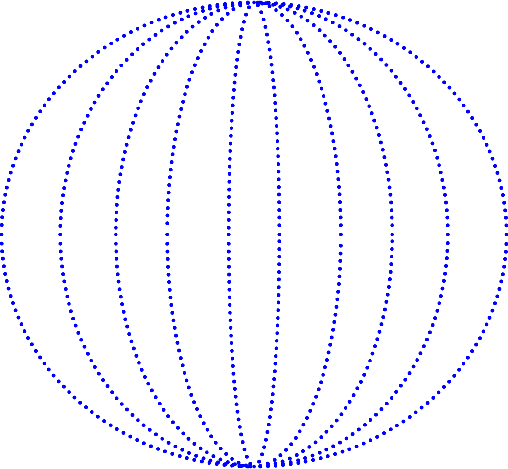

Earth.Log
·
·
·
·
·
·
·
·
·
Earth.log
is a folder of online things that help people work out how to live on Earth. Small websites,
public archives, repair guides, open-source projects, community knowledge, half-built ideas.
“We are as gods
and might as well get good at it. . . A realm of intimate, personal power is
developing power of the individual to conduct his own education, find his own inspiration, shape his own
environment,
and share his adventure with whoever is interested. Tools that aid this process are sought and promoted by
the WHOLE EARTH CATALOG.”
Whole Earth Catalog, Fall 1968
access to tools become access to link
Repair guides. Wikis. Forums. Personal sites maintained by one person for ten years. Webrings. Volunteer-mapped
streets. The encyclopedia that anyone can edit. The solar server that goes offline when it rains. The beautiful
and the banal. The serious and the silly. The one-person project and the millions-of-contributors project. Below
are seven of them, made on purpose, edited by hand, kept alive by the readers who keep using them.
FUNCTION
An entry is included in the catalog if it is:
- Relevant to living on Earth,
- Useful in everyday life,
- Aware of its context and limitations,
- Connected to a larger system.
·
·
·
·
·
·
·
·
·

"Stay hungry, stay foolish."
COLOPHON
Text
Stewart Brand, The Whole Earth Catalog
Written by Pasika Chuamanasawad
Shortened by ChatGP
Typeface
Louvette Pixel by CJ Dunn
Trebuchet MS by Vincent Connare.